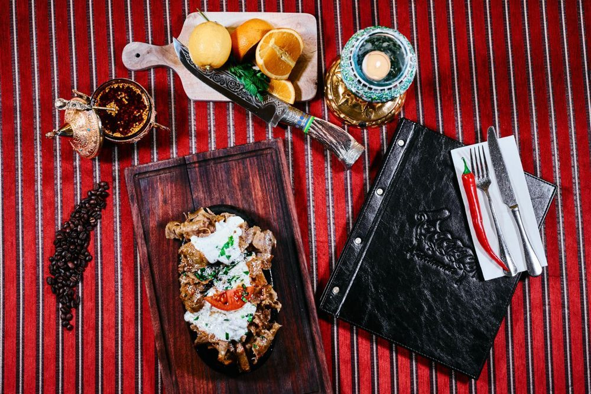

Lunch in Freiburg
Lunch in Freiburg: 20 dishes for €10.90
From saç döner and Ali Nazik to börek: every day from 11:30 am to 4 pm Divan serves twenty lunch dishes – each for €10.90. Right in the city centre, just a few minutes’ walk from the university and the main station.
The lunch menu at a glance
- Time: daily from 11:30 am to 4 pm
- Choice: 20 lunch dishes
- Price: €10.90 per dish
- Note: hours may differ on public holidays – if in doubt, call: 0761 2927151.

What is on the lunch menu?
The choice ranges from saç döner and Ali Nazik to börek. For orientation:
- Saç döner – a döner dish from the saç pan, the domed iron plate of Anatolian cooking.
- Ali Nazik – classically aubergine purée with garlic yoghurt and fried meat, a dish from south-eastern Anatolia.
- Börek – filled pastry made from thin dough.
See the current selection in the digital menu or ask by phone. More about the dishes: Turkish food explained.
A lunch break in the middle of the city
We are at Bertoldstraße 54 – ideal for a lunch break between lectures, the office, a stroll through town or a train journey:
| Place | Distance | On foot |
|---|---|---|
| University Library (Platz der Universität) | approx. 210 m | approx. 3 min |
| Freiburg main station (Hauptbahnhof) | approx. 270 m | approx. 4 min |
| Bertoldsbrunnen | approx. 470 m | approx. 8 min |
Lunch and dinner in one place
After the lunch menu the full menu with more than 200 dishes and drinks is available, and we are open until 11:30 pm. For an overview see Restaurant in Freiburg city centre.
At a glance
- Address
- Bertoldstraße 54
79098 Freiburg im Breisgau - Phone & reservations
- 0761 2927151
- Opening hours
- Daily 11:30 am – 11:30 pm
- Lunch menu
- 11:30 am – 4 pm · €10.90 per dish
Frequently asked questions
Is the lunch menu available at the weekend?
We offer the lunch menu every day from 11:30 am to 4 pm. Hours may differ on public holidays.
How much is the lunch menu?
Each of the 20 lunch dishes costs €10.90.
Can I book a table for lunch?
Yes, by phone on 0761 2927151.
Can I get the lunch menu delivered?
You will also find a lunch menu on Lieferando. Selection and prices may differ there; please check the delivery area in the app.
Book a table or order to your door
Give us a call – or have our dishes delivered (check the delivery area in the respective app).